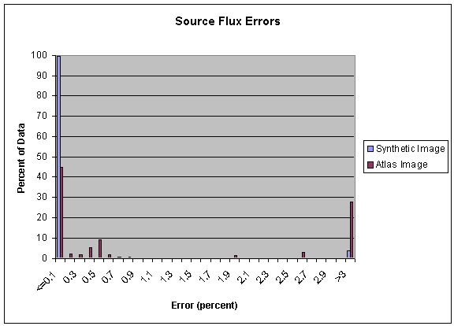
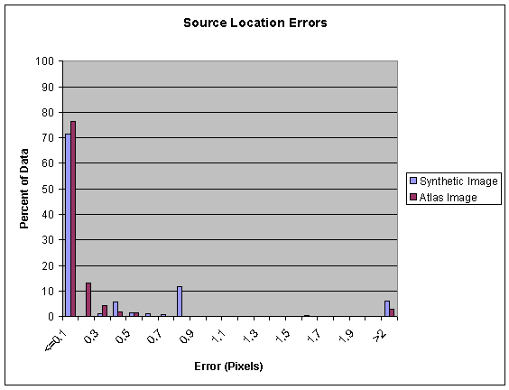
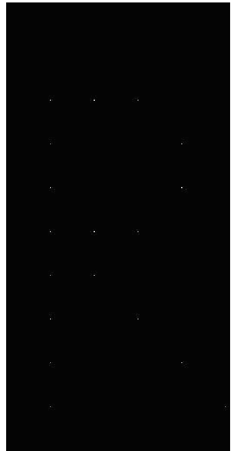
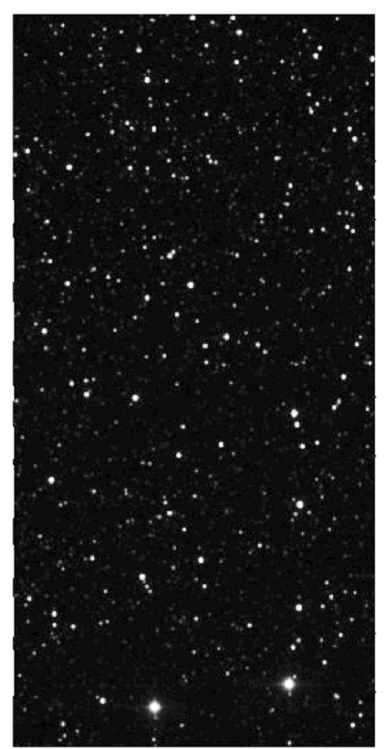

This document summarizes the results of the accuracy testing that was done on mProject, the engine that performs all reprojections, image rotations, coordinate transformations, and spatial sampling within Montage. The accuracy and fidelity of an image mosaic is governed by the performance of mProject, the computational heart of Montage. An extensive test program was performed on mProject that investigated the accuracy and fidelity of transformed images by extracting point sources from the original and processed images, and comparing their fluxes and positions. Interested parties wishing to see individual test results should contact the Montage project at montage@ipac.caltech.edu.
The SWIRE team has also performed third-party validation for Montage: read more.
Sextractor
The principal test tool was Sextractor, an Open Source tool used widely in astronomy for extracting point sources from images. It is available for download at http://terapix.iap.fr/soft/sextractor/. A particularly useful User Guide is "Source Extractor for Dummies." Configuration of Sextractor for application to images processed by Montage is included in Source Extractor Caveats (Word).
Description of Test Suite
The mProject test suite consisted of the following:
With the exception of the DSS projection, the product of all those parameters was performed, resulting in 1144 re-projections. In addition, 8 projections (4 atlas and 4 synthetic files) were tested for SIN to DSS projection. This resulted in a grand total of 1152 re-projections.
For null and flat images, only the output of mProject was tested (to check for its stability), and in addition a few images were visually inspected.
For synthetic and atlas images, a much more rigorous testing was performed to test the accuracy of re-projections. The images that were used for the testing can be seen in Appendix A (synthetic image) and Appendix B (atlas image). The software sextractor was used to extract the sources present in input and the re-projected files; then the locations and fluxes of these files were compared (see detailed-test.doc for more details on how this was done).
The results of our accuracy testing are summarized in two histograms below. The first histogram summarizes the flux errors for both the synthetic and the atlas images:

For synthetic images, 99.7% of the sources in the re-projected images were within 0.1% of the original flux, the remaining 0.3% have approximately a 6% error. These larger errors were reported in cases where mProject was used to "zoom in" on the input image or when reprojecting between very similar projections, and was corrected prior to version 3.0 of Montage.

For synthetic images 72.0% of the sources in the re-projected images were within 0.1 pixel (in the pixel size of the original image) of where they were in the original image. The source of this error is also well known and is not due to Montage; it is, in fact, unavoidable. Because we are using single pixel resolution in the synthetic source image, when there is a change to a coarser resolution or when the shape of a pixel changes greatly the location of the center of the pixel cannot be preserved. This is highlighted by the fact that locations of sources were conserved better by the atlas image tests, even though there is more uncertainty in the extraction of sources from these images. If one does not include the transformations to coarser resolution in the analysis then 100% of the sources in synthetic re-projected images were within 0.1 pixels of where they were in the original image. To exemplify what is happening, we analyze the zoomout2 images; here the error in location is stated to be 0.707 pixels. This is because the side of a pixel goes from 1.0 (in original pixel units) to 2.0, therefore the center of the pixel moves by sqrt(2)/2, which is exactly 0.707.
The performance of Montage on the atlas images is also summarized in the histograms; however, because the image used for analysis is extremely dense with sources, the ideal sextractor parameters needed for extraction could not be found. In all cases where we had larger errors (42 of the atlas images that could not be properly extracted), it could be attributed to our inability to extract sources accurately with sextractor (e.g. it would extract two sources as one, thereby causing major flux and some location errors) with the threshold settings that we had.
Appendix A - Synthetic image used for accuracy/precision testing

Appendix B - 2MASS atlas image used for accuracy/precision testing
